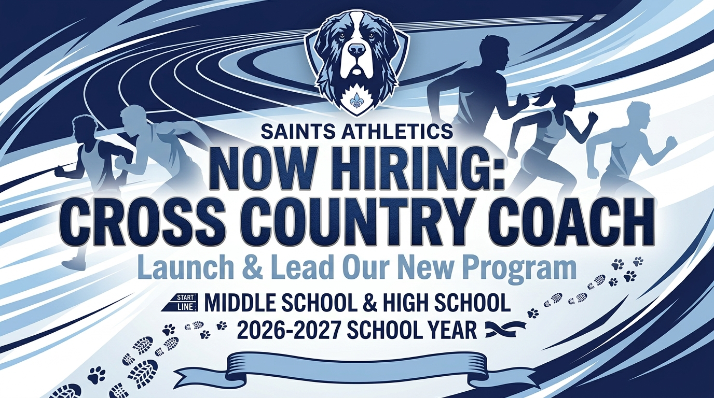

Cross Country Coach Opening | 2026–2027 School Year
Help Us Launch a New Program — Middle & High School
Description
We’re looking to start something new at Byne—and we need the right leader to take the first step. BCS is seeking a Cross Country Coach to launch and lead a new program for Middle School and High School students for the 2026–2027 school year. This is an exciting opportunity to build a program from the ground up, invest in student-athletes, and set the pace for years to come. If you have a passion for running, mentoring students, and developing a strong team culture, we’d love to connect with you. Come help us get this program off to a RUNNING start.